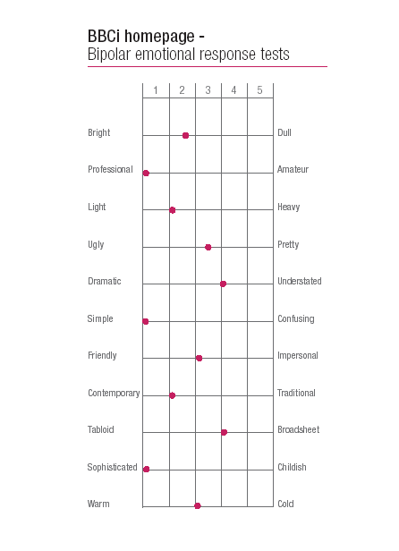

User Analysis
Who are your users?
- YOU ARE NOT YOUR USERS - so don't automatically assume that you know exactly what they want!
- In which case... WHO the heck are they?
- Initial business analysis usually identifies the general types of user
- In a business context, marketing departments often have a good overview of users
- We need to find out more detail, though
What can we find out about them?
- Social and economic factors
- Skill levels (expert or novice?)
- Environments (connection speed / browser / hardware / shared or exclusive
use?)
- Likes and dislikes
- Product usage patterns & product-related desires
- Vocabulary / language
...a combination of intelligent guesswork and research, combined with iterative design
Getting into the minds of your users
- To design an effective web site that meets the needs of your users, you'll
need to get into the minds of your users
- You therefore need to do some research
Four questions we can ask about our users
- What do users need? (conceptual understanding of primary user tasks)
- What do users want? (user preferences)
- What do users do? (user behaviors)
- What do users feel? (emotional responses)
Our aim is to develop a mental model of our users and the
way they carry out their tasks.
Initially, focusing on what users need and what they do is more productive than asking users what they want.
The risk of asking people what they want...
User research methods
Ideally, you need to interact with your users and find out about them! Research methods include...
Contextual Enquiry
- An observational technique that involves watching users work in a natural context (hence the name!)
- The aim is to see what users actually do, rather than getting them to say what they think they do
- Adopt a master-apprentice relationship (you are the apprentice)
- Interview subject after observational period
Further reading: Contextual
enquiry at the Usability Methods Toolbox
Interviews & Questionnaires 1
Advantages of User Interviews
- Straight from the horses mouth!
- Can be guided/exploratory
Interviews & Questionnaires 2
Disadvantages of User Interviews
- Time consuming to arrange, conduct, document (scribe!) and interpret
- Need to conduct lots to achieve a representative sample user population
- Difficult to ensure all appropriate questions are asked
- Interviewer Bias
- Fear of getting in trouble! - explain your purpose
- People don't always do what they say they do! A combination of observation and interviews may be more illuminating.
Interviews & Questionnaires 3
Advantages of User Questionnaires
- High volume
- Email can allow ease of delivery
- Can be used to gather quantitative data
- Good to gain answers to simple unambiguous binary questions.
Interviews & Questionnaires 4
Disadvantages of User Questionnaires
- Bias
- Difficult to guide or direct
- People who actually bother to fill out voluntary questionnaires are often not representative users!
- Very difficult to design a “good” questionnaire
Task - Anything Wrong With These Questions?
- Q1: How many times have you visited Apple recently?
- 5
- 10
- 15
- Q2: How often did you use amazon in the last month?
- Never
- Rarely
- Occasionally
- Regularly
Emotional response testing 1
You can get your users to assess the personality an existing
web site (or a competitor web sites) by asking them to rate the site on a
number of emotional scales. For example, from the redesign of the BBC Web
site....

Similar techniques are outlined in more detail in Microsoft's Desirability Toolkit (Word document).
Emotional response testing 2
BERTs can help provide:
- A fingerprint for your site/product/competitor site/graphic design concept/prototype....!
- A comparison between the intended perception of a site [business stakeholders view] with the site's actual perception [users view].
- Feedback on how a site fits within company brand values [the fingerprint of the organisation]
- Feedback on graphical design concepts/prototypes before build or provide useful feedback on the completed site